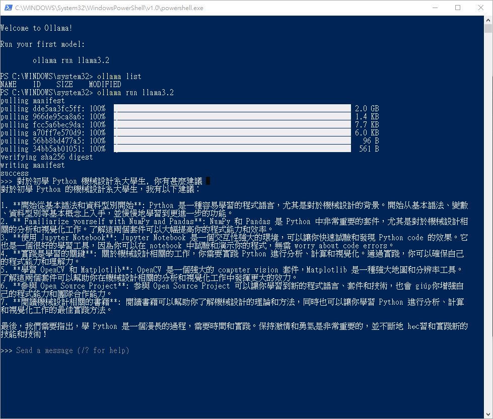

Computer <<
Previous Next >> nginx
llama
在自己的電腦上執行 llama:
若電腦有 GPU 可以加快運算，若只有 CPU 也可以執行，以下採一台安裝 Windows 10 的舊電腦進行示範。
安裝 ollama 工具:
連線至 https://ollama.com，下載安裝後，可直接執行 llama3.2 (約 2GB):
安裝完成後，ollama 位於: C:\Users\使用者帳號\AppData\Local\Programs\Ollama，可以利用命令列視窗或 Powershell 命令列視窗，更換目錄至 Ollama 之後，以 ollama list 列出已經取下的模型，例如: 系統已經取下 llama3.2，則可利用 ollama run llama3.2 執行。
各種開放模擬列表: https://ollama.com/search，若要取下 deepseek-r1 模型 (約 5.2GB)：
cd C:\Users\使用者帳號\AppData\Local\Programs\Ollama
ollama pull deepseek-r1
ollama run deepseek-r1
若要中斷對談，使用 ctrl + c，若要跳出 ollama 的語言模型執行，使用 ctrl + d
以下畫面在電腦輔助設計室上一代電腦，配置 Intel i7-6700 CPU @ 3.40GHz，32GB 記憶體，安裝 NVIDIA GeForce GTX 950 顯卡電腦上執行:

有關 Llama (資料取自 llama):
Llama (Large Language Model Meta AI, formerly stylized as LLaMA) is a family of large language models (LLMs) released by Meta AI starting in February 2023. The latest version is Llama 4, released in April 2025.
Llama models come in different sizes, ranging from 1 billion to 2 trillion parameters. Initially only a foundation model, starting with Llama 2, Meta AI released instruction fine-tuned versions alongside foundation models.
Model weights for the first version of Llama were only available to researchers on a case-by-case basis, under a non-commercial license. Unauthorized copies of the first model were shared via BitTorrent. Subsequent versions of Llama were made accessible outside academia and released under licenses that permitted some commercial use.
Alongside the release of Llama 3, Meta added virtual assistant features to Facebook and WhatsApp in select regions, and a standalone website. Both services use a Llama 3 model.
Computer <<
Previous Next >> nginx